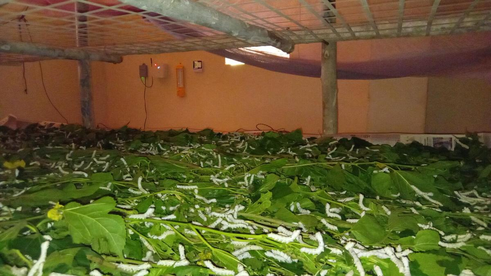
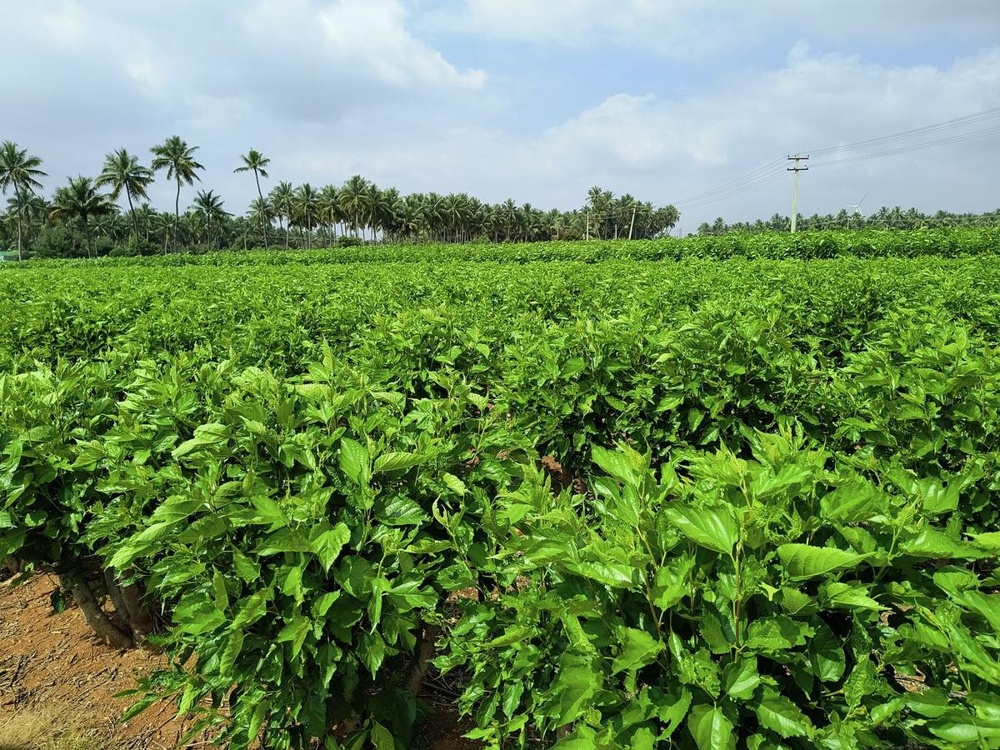
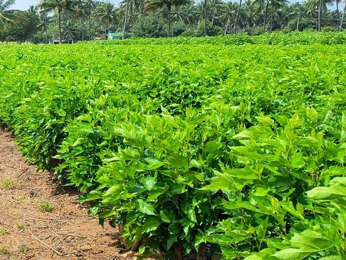
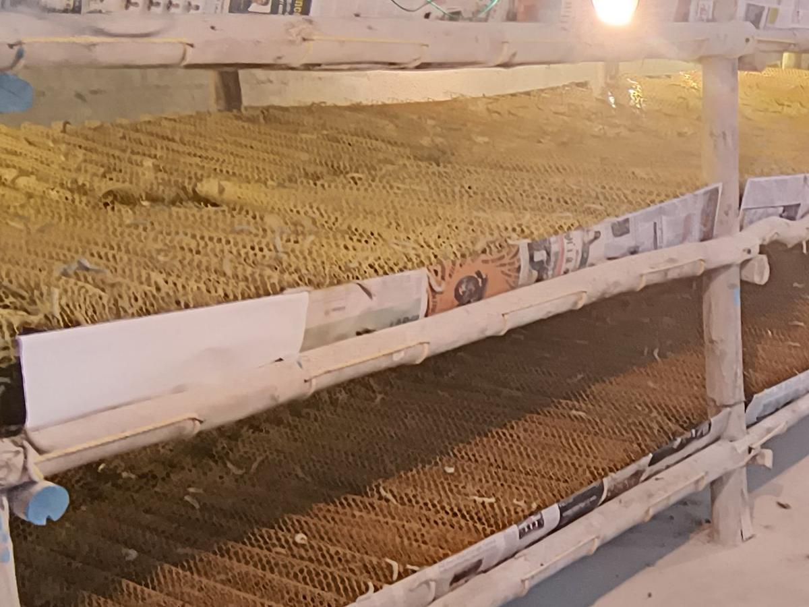
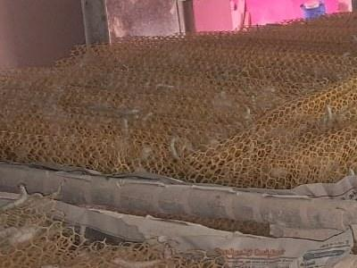
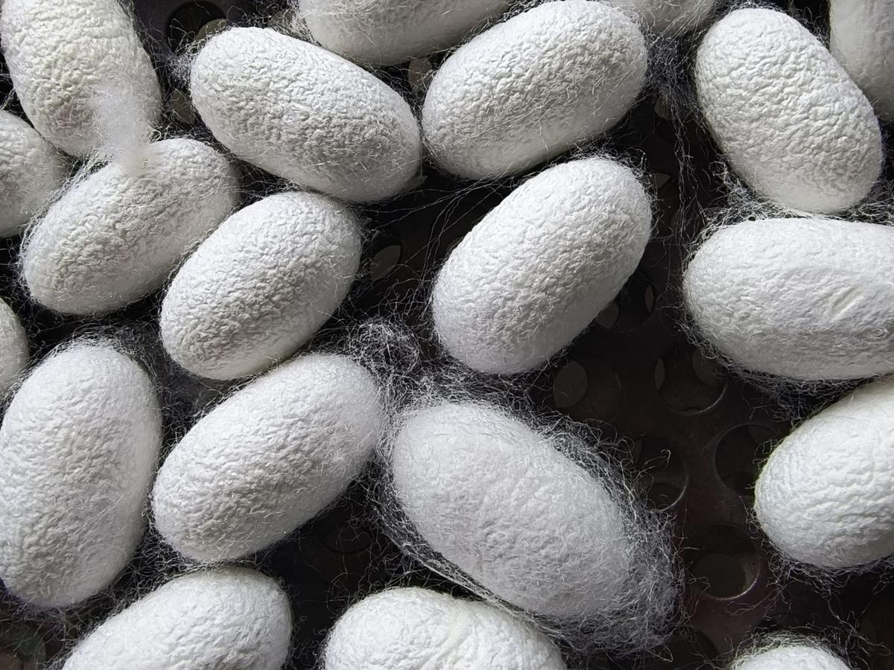
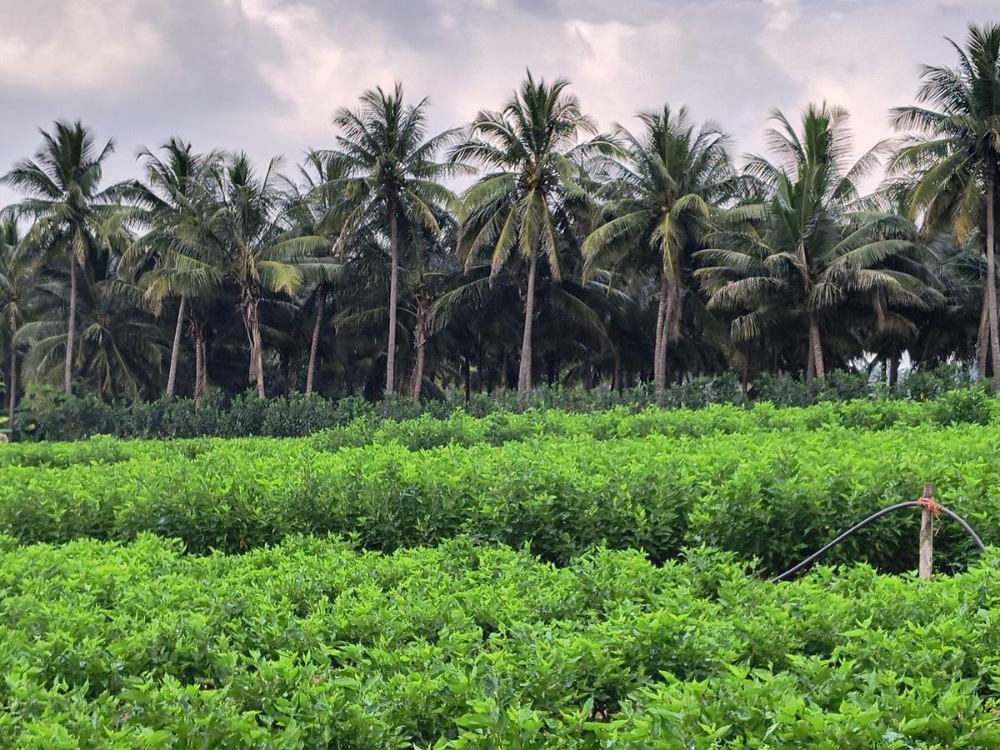

SeriGreen builds instruments for the sericulture cycle — the mulberry, the rearing house, and the boundary where a neighbour's spray arrives. We measure the conditions that decide a crop, keep the record, and tell the farmer in time to act on it.

Sericulture supports a large number of smallholder families in India. It is also unusually exposed — to a neighbour's spray schedule, to weather that no longer follows the old pattern, to a narrow band of temperature and humidity that changes with every instar, and to the simple absence of any record of what happened.
The leaf is the entire input. Variety, irrigation and plantation spacing set what the worm will eat for six weeks.
Most farmers do not hatch eggs. Young worms come from a chawki centre and arrive at the second or third instar.
Five instars in the rearing house. Early worms need high humidity, late worms need much less, and the band is narrow at every stage.
Ripe worms are moved to chandrike to spin. Crowding, disturbance and damp all show up later in the shell.
Graded on shell ratio, uniformity, colour and texture. This is where six weeks of decisions become a number.
Price follows grade. A failed batch is six weeks of leaf, labour, eggs and electricity with nothing at the end of it.
We work on the parts of this cycle that can be measured — the leaf and the boundary at stage 01, and the rearing house at stage 03 — and on keeping a record good enough that stage 06 can be explained.
India has no buffer-zone regulation protecting sericulture, against international norms of three to a hundred metres. A neighbour spraying cotton, sugarcane, banana or chilli has no duty to tell anyone. This is the stage of the cycle we understand best, and it is where our first instrument sits.
Nozzles throw fifty to five hundred micrometres. Anything under a hundred and fifty does not fall — it stays up and moves with the wind.
The leaf is fresh and green; residue is invisible. Sericulture has a zero-tolerance standard, so a dose far below lethal has already ruined it.
Within hours the worms stop feeding, regurgitate, curl and go flaccid. By then the decision that mattered is days behind him.
Published toxicology on mulberry pesticide exposure is unambiguous — cocoon and shell weights collapse at doses far below anything that looks dangerous. That work is not ours; we cite it because it is the reason this problem is worth instrumenting.
Each one is at a different stage of readiness, and we say which. Nothing here is described as finished before it is.
A unit that stands on the boundary facing the neighbouring field, at mulberry leaf height. It samples the air and the wind that carry a spray onto the leaf, and raises a score when a reading moves fast rather than merely high — because plumes arrive in seconds while weather moves over hours. It tells you that a spray passed this point, at this time. It does not name the chemical and it does not touch the leaf.
A rearing house built to hold its own climate, so the temperature and humidity band can be kept where the instar actually needs it instead of where the weather leaves it. We designed it, costed it and built one, and ran it as a paired trial — the same farmer, the same mulberry, conventional rearing on one side and controlled rearing on the other.
One place for the record. Readings from the boundary unit and from the rearing house land in a single view — current conditions, the history behind them, and the alerts that were raised. On top of that record sits a scoring layer that reads rearing conditions against known disease thresholds and flags when a house is drifting into a risk band.
Readings, alerts and the record on a phone, in the language the farmer actually reads. Rearing practice notes for the stage the batch is at, and the history of the block so a grade can be explained afterwards rather than guessed at.
Our work follows the structure of our patent application — a field optimisation and protection system. Protection is where it starts, because that is where a season is most often lost.
Instruments on the boundary facing the neighbouring field, sampling the air and the wind that carry a spray onto mulberry leaf.
Plumes arrive in seconds; weather moves over hours. Reading the rate of change rather than the level is what separates a spray from an ordinary afternoon.
The decision this changes is whether to cut leaf from that block, and when. The record stays afterwards, to explain an outcome and to carry into the next season.
SeriGreen is pre-revenue and in active research and development. We do not publish performance claims we cannot yet evidence, and where a product is not finished this page says so.
Mulberry plots, rearing houses, mountages and cocoons, across Tamil Nadu. These are our own photographs, taken on the farms we work on.






Grants, recognitions and the trials we have run. Dated, and stated as history rather than as an ongoing claim.
The grant that started deep-tech development in sericulture for us. The incubation term has since concluded.
A government-backed innovation grant to build sensing and rearing systems for silk farmers. The incubation term has since concluded.
Selected among the top ten women entrepreneurs working on sustainability.
Recognised among the top twenty agri-tech startups for innovation in sericulture.
A paired trial on one farm in Sathyamangalam — the same grower, the same mulberry, conventional rearing against a controlled house. Climate held manually while the automation was still being finished.
First prize for women-led agri-tech innovation, International Women's Day.
The same house run again with instrumented monitoring, to see whether the first result repeated under a second cycle.
Selected for the programme that helps deep-tech startups move from an idea toward something a customer can buy.
Selected for the national agricultural innovation programme.
Repeated instrumented sessions against known sprays at measured distances, with the full record kept — including the sessions where the device did not respond.
A registered Indian private limited company, pre-revenue and in active research and development. Founded by people with roots in silk weaving and silkworm rearing — this work began in conversations with farmers, scientists and traders, not in a laboratory. Our core approach is the subject of a patent application filed with the Indian Patent Office; the application is pending examination, we do not publish its details while it is under examination, and we make no claim to a granted patent.
For research collaboration, a farm trial, partnership, investment or supplier enquiries — write to us and we will respond.